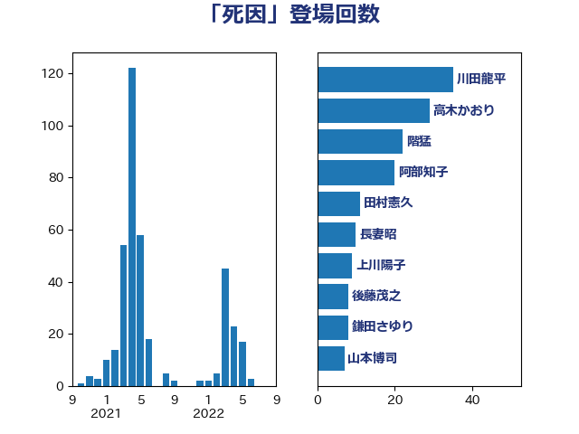

単語「死因」

| 川田龍平 | 立憲民主党 | 35 回 |
| 高木かおり | 日本維新の会 | 29 回 |
| 階猛 | 立憲民主党 | 22 回 |
| 阿部知子 | 立憲民主党 | 20 回 |
| 田村憲久 | 自由民主党 | 11 回 |
| 長妻昭 | 立憲民主党 | 10 回 |
| 上川陽子 | 自由民主党 | 9 回 |
| 後藤茂之 | 自由民主党 | 8 回 |
| 鎌田さゆり | 立憲民主党 | 8 回 |
| 山本博司 | 公明党 | 7 回 |
| 梅村みずほ | 日本維新の会 | 6 回 |
| 秋野公造 | 公明党 | 6 回 |
| 自見はなこ | 自由民主党 | 6 回 |
| 山田太郎 | 自由民主党 | 5 回 |
| 米山隆一 | 立憲民主党 | 5 回 |
| 岸田文雄 | 自由民主党 | 4 回 |
| 柳ヶ瀬裕文 | 日本維新の会 | 4 回 |
| 川合孝典 | 国民民主党 | 3 回 |
| 田村智子 | 日本共産党 | 3 回 |
| 伊藤孝恵 | 国民民主党 | 2 回 |
| 古屋範子 | 公明党 | 2 回 |
| 塩川鉄也 | 日本共産党 | 2 回 |
| 宮本徹 | 日本共産党 | 2 回 |
| 稲田朋美 | 自由民主党 | 2 回 |
| 菅義偉 | 自由民主党 | 2 回 |
| 金村龍那 | 日本維新の会 | 2 回 |
| こやり隆史 | 自由民主党 | 1 回 |
| 中谷真一 | 自由民主党 | 1 回 |
| 井出庸生 | 自由民主党 | 1 回 |
| 勝部賢志 | 立憲民主党 | 1 回 |
| 大口善徳 | 公明党 | 1 回 |
| 大岡敏孝 | 自由民主党 | 1 回 |
| 山添拓 | 日本共産党 | 1 回 |
| 岡本三成 | 公明党 | 1 回 |
| 村井英樹 | 自由民主党 | 1 回 |
| 松本尚 | 自由民主党 | 1 回 |
| 水岡俊一 | 立憲民主党 | 1 回 |
| 津島淳 | 自由民主党 | 1 回 |
| 牧原秀樹 | 自由民主党 | 1 回 |
| 石川大我 | 立憲民主党 | 1 回 |
| 福島みずほ | 社会民主党 | 1 回 |
| 稲津久 | 公明党 | 1 回 |
| 藤井比早之 | 自由民主党 | 1 回 |
| 赤羽一嘉 | 公明党 | 1 回 |
| 野田聖子 | 自由民主党 | 1 回 |
| 鰐淵洋子 | 公明党 | 1 回 |